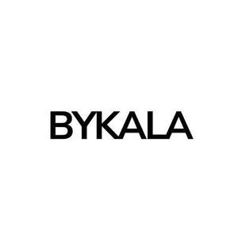

Trade Mark Journal No.2025/049 5 December 2025
UK00004298917 21 November 2025 (3,25,44)

- Class 3
- Eyelashes; Eyelashes (False -); False eyelashes; Artificial eyelashes; Adhesives for false eyelashes, hair and nails; Cosmetics for eye-lashes; Eyebrow mascara; Hair mascara; Eyelashes (Cosmetic preparations for -); Cosmetic preparations for eyelashes; Eyelashes (Adhesives for affixing false -); Adhesives for affixing false eyelashes; Eyelash tint; Mascara; Eyelash dye; Adhesives for affixing artificial eyelashes; Eyebrows [false]; Cosmetic preparations for eye lashes; Self-adhesive false eyebrows; Long lash mascaras; Eyes make-up; Eyebrow cosmetics; Eyelid doubling makeup; Eyelid pencils; Eyeliner; Cosmetics for eye-brows; Hair cosmetics; Mascaras; Liners [cosmetics] for the eyes; Hair serums; Eyelid shadow; Eye makeup; Hair moisturisers; Eye-shadow; Hair moisturizers; Eye make-up; Hair creams; Hair masks; Adhesives for affixing false eyebrows; Hair balms; Colour cosmetics for the eyes; Hair lighteners; Hair lotions; Eye concealers; Tints for the hair; Eye cosmetics; Hair frosts; Hair mousses; Eyebrow pencils; Pencils (Eyebrow -); Eyebrow gel; Cosmetics for the use on the hair; Lip makeup; False fingernails; Eye make-up removers; Eyeliner pencils; Colouring lotions for the hair; Hair glaze; Hair lacquers; Eyebrow colors; Hair colourants; Hair bleaches; Cosmetic pencils for cheeks; Hair glazes; Cosmetic hair lotions; Eyes pencils; Dyes for the hair; Hair dyes; Eye makeup remover; Hair sprays; Hair cream; Cosmetic preparations for the hair and scalp; Hair lotion; Hair mousse; Adhesives for affixing false hair; False hair (Adhesives for affixing -); Skin make-up; Hair wax.
- Class 25
- Clothing; Knitwear [clothing]; Jackets [clothing]; Ready-to-wear clothing; Woolen clothing; Furs [clothing]; Garments for protecting clothing; Clothing layettes; Layettes [clothing]; Linen clothing; Headbands [clothing]; Headbands for clothing; Gloves [clothing]; Gloves as clothing; Clothes; Aprons [clothing]; Maternity clothing; Jerseys [clothing]; Kerchiefs [clothing]; Denims [clothing]; Shorts [clothing]; Cashmere clothing; Oilskins [clothing]; Gabardines [clothing]; Leather clothing; Clothing of leather; Leather (Clothing of -); Silk clothing; Collars [clothing]; Parts of clothing, footwear and headgear; Knitted clothing; Veils [clothing]; Windproof clothing; Hoods [clothing]; Corsets [clothing, foundation garments]; Embroidered clothing; Wristbands [clothing]; Bandeaux [clothing]; Belts [clothing]; Belts for clothing; Waterproof clothing; Rainproof clothing; Casual clothing; Visors [clothing]; Jackets being sports clothing; Jackets (Stuff -) [clothing]; Stuff jackets [clothing]; Bottoms [clothing]; Playsuits [clothing]; Ready-made clothing; Clothing for leisure wear; Infant clothing; Woven clothing; Trunks being clothing; Leisure clothing; Clothing for sports; Sports clothing; Athletic clothing; Ties [clothing]; Clothing for children; Clothing for babies; Tops [clothing]; Clothing for infants; Weatherproof clothing; Fabric belts [clothing]; Beach clothing; Thermal clothing.
- Class 44
- Eyelash curling services; Eyelash perming services; Beauty treatment services especially for eyelashes; Eyelash dyeing services; Eyelash tinting services.
The Hidden Beauty Bar Ltd